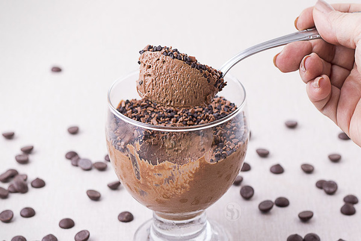

Mousse Tia Irene
INGREDIENTES:
- 5 ovos
- 1 tablete de chocolate ao leite 100g
- 1 tablete de chocolate meio amargo 100g
- ½ xícara (chá) de açucar
- 1 colher (sopa) de manteiga
MODO DE PREPARO:
Primeiro, derreta o chocolate com a manteiga no micro-ondas em intervalos de 30 segundos, misturando bem a cada vez, e reserve. Separe as gemas das claras. Bata as gemas com o açúcar na batedeira até obter uma mistura esbranquiçada. Em seguida, bata as claras em neve (ponto de pico firme).
Desligue a batedeira e adicione o chocolate derretido às gemas aos poucos, misturando suavemente para evitar derramar tudo de uma vez. Quando a mistura estiver homogênea, incorpore as claras batidas usando um fouet ou espátula, fazendo movimentos delicados de baixo para cima para preservar a leveza.
Por fim, leve à geladeira por, no mínimo, 4 horas. Decore com raspas de chocolate antes de servir.
A História por trás da Receita
Quando me casei ouvi muito falar do lendário mousse de chocolate, uma sobremesa cercada de pequenas travessuras dessa família portuguesa. Meu sogro e seu primo eram os maiores fãs e também os mais habilidosos em escondê-la dos demais, guardando cuidadosamente porções extras para si, como se fosse um tesouro.
Aprendi essa receita com a Tia de meu Sogro, uma escorpiana nata, que transforma simples ingredientes em memórias inesquecíveis. Vi ela preparando essa mousse de chocolate durante uma noite de Natal, em uma celebração repleta de risadas e histórias que só as famílias sabem contar. Era um Natal especial, o primeiro que passamos com a família de seu primogênito.
Naquela noite, quando nos reunimos ao redor da mesa, percebi que a mousse de chocolate e a tarte de amêndoas (mas essa é uma outra história) eram mais do que simples sobremesas: eram laços de amor que atravessavam gerações, símbolos das tradições que unem corações, memórias partilhadas e a força invisível que nos mantém conectados, mesmo quando o tempo e a distância tentam nos separar.